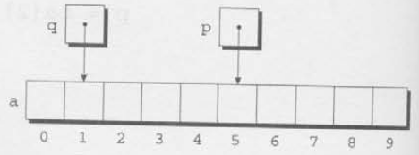

Optimization hinders evolution.
Chapter 11 introduced pointers and showed how they’re used as function arguments and as values returned by functions. This chapter covers another application for pointers. When pointers point to array elements, C allows us to perform arithmetic—addition and subtraction—on the pointers, which leads to an alternative way of processing arrays in which pointers take the place of array subscripts.
The relationship between pointers and arrays in C is a close one, as we’ll soon see. We’ll exploit this relationship in subsequent chapters, including Chapter 13 (Strings) and Chapter 17 (Advanced Uses of Pointers). Understanding the connection between pointers and arrays is critical for mastering C: it will give you insight into how C was designed and help you understand existing programs. Be aware, however, that one of the primary reasons for using pointers to process arrays—efficiency—is no longer as important as it once was, thanks to improved compilers.
Section 12.1 discusses pointer arithmetic and shows how pointers can be compared using the relational and equality operators. Section 12.2 then demonstrates how we can use pointer arithmetic for processing array elements. Section 12.3 reveals a key fact about arrays—an array name can serve as a pointer to the array’s first element—and uses it to show how array arguments really work. Section 12.4 shows how the topics of the first three sections apply to multidimensional arrays. Section 12.5 wraps up the chapter by exploring the relationship between pointers and variable-length arrays, a C99 feature.
We saw in Section 11.5 that pointers can point to array elements. For
example, suppose that a and p have been
declared as follows:
int a[10], *p;We can make p point to a[0] by writing
p = &a[0];Graphically, here’s what we’ve just done:
We can now access a[0] through p; for
example, we can store the value 5 in a[0] by writing
*p = 5;Here’s our picture now:

Making a pointer p point to an element of an array
a isn’t particularly exciting. However. by performing
pointer arithmetic (or address arithmetic) on p, we can
access the other elements of a. C supports three (and only
three) forms of pointer arithmetic:
- Adding an integer to a pointer
- Subtracting an integer from a pointer
- Subtracting one pointer from anotherLet’s take a close look at each of these operations. Our examples assume that the following declarations are in effect:
int a[0], *p, *q, i;
Adding an integer j to a pointer p yields a
pointer to the element j places after the one that
p points to. More precisely, if p points to
the array element a[i]. then p + j points to
a[i + j] (provided, of course, that a[i + j]
exists).
The following example illustrates pointer addition; diagrams show the
values of p and q at various points in the
computation.
p = &a[2];
q = p + 3;
p += 6;
If p points to the array element a[i], then
p - j points to a[i - j]. For example:
p = &a[8];
q = p - 3;
p -= 6;
When one pointer is subtracted from another, the result is the
distance (measured in array elements) between the pointers. Thus, if
p points to a[i] and q points to
a[j].then p - q is equal to
i - j. For example:
p = &a[5];
q = &a[1];
i = p - q; /* i is 4 */
i = q - p; /* i is -4 */
Performing arithmetic on a pointer that doesn’t point to an array element causes undefined behavior. Furthermore, the effect of subtracting one pointer from another is undefined unless both point to elements of the same array.
We can compare pointers using the relational operators
(<, <=, >,
>=) and the equality operators (== and
|=). Using the relational operators to compare two pointers
is meaningful only when both point to elements of the same array. The
outcome of the comparison depends on the relative positions of the two
elements in the array. For example, after the assignments
p = &a[5];
q = &a[1];the value of p <= q is 0 and the value of
p >= q is 1.
It’s legal for a pointer to point to an element within an array created by a compound literal. A compound literal, you may recall, is a C99 feature that can be used to create an array with no name.
Consider the following example:
int *p = (int [1]){3, 0, 3, 4, 1};p points to the first element of a five-element array
containing the integers 3, 0, 3, 4, and 1. Using a compound literal
saves us the trouble of first declaring an array variable and then
making p point to the first element of that array:
int a[] = {3, 0, 3, 4, 1}:
int *p = &a[0];Pointer arithmetic allows us to visit the elements of an array by
repeatedly incrementing a pointer variable. The following program
fragment, which sums the elements of an array a,
illustrates the technique. In this example, the pointer variable
p initially points to a[0]. Each time through
the loop, p is incremented; as a result, it points to
a[1], then a[2], and so forth. The loop
terminates when p steps past the last element of
a.
#define N 10
...
int a[N], sum, *p;
...
sum = 0;
for (p = &a[0]; p < &a[N]; p++)
sum += *p;The following figures show the contents of a,
sum, and p at the end of the first three loop
iterations (before p has been incremented).
At the end of the first iteration: I

At the end of the second iteration:

At the end of the third iteration

The condition p < &a[N] in the for
statement deserves special mention. Strange as it may seem, it’s legal
to apply the address operator to a[N], even though this
element doesn’t exist (a is indexed from 0 to
N — 1). Using a[N] in this fashion is
perfectly safe, since the loop doesn’t attempt to examine its value. The
body of the loop will be executed with p equal to
&a[0], &a[1], ...,
&a [N-1], but when p is equal to
&a[N], the loop terminates.
We could just as easily have written the loop without pointers, of
course, using subscripting instead. The argument most often cited in
support of pointer arithmetic is that it can save execution time.
However, that depends on the implementation—some C compilers actually
produce better code for loops that rely on
subscripting.
C programmers often combine the * (indirection) and
++ operators in statements that process array elements.
Consider the simple case of storing a value into an array element and
then advancing to the next element. Using array subscripting, we might
write
a[i++] = j;If p is pointing to an array element, the corresponding
statement would be
*p++ = j;Because the postfix version of ++ takes precedence over
*, the compiler sees this as
*(p++) = j;The value of p++ is p. (Since we’re using
the postfix version of ++, p won’t be incremented until
after the expression has been evaluated.) Thus, the value of
*(p++) will be *p—the object to which
p is pointing.
Of course, *p++ isn’t the only legal combination of
* and ++. We could write (*p)++,
for example, which returns the value of the object that p
points to, and then increments that object (p itself is
unchanged). If you find this confusing, the following table may
help:
|
Expression |
Meaning |
|---|---|
|
|
Value of expression is |
|
|
Value of expression is |
|
|
Increment |
|
|
Increment p first; value of expression is p after increment |
All four combinations appear in programs, although some are far more
common than others. The one we’ll see most frequently is
*p++, which is handy in loops. Instead of writing
for (p = &a[0]; p < &a[N]; p++)
sum += *p;to sum the elements of the array a, we could write
p = &a[0];
while (p < &a[N])
sum += *p++;The * and -- operators mix in the same way
as * and ++. For an application that combines
* and --, let’s return to the stack example of
Section 10.2. The original version of the stack relied on an integer
variable named top to keep track of the “top-of-stack”
position in the contents array. Let’s replace
top by a pointer variable that points initially to element
0 of the contents array:
int *top_ptr = &contents[0];Here are the new push and pop functions
(updating the other stack functions is left as an exercise):
void push(int i)
{
if(is_full())
stack_overflow() ;
else
*top_ptr++ = i;
}
int pop(void)
{
if (is_empty())
stack_underflow() ;
else
return *--top_ptr;
}Note that I’ve written *--top_ptr, not
*top_ptr--, since I want pop to decrement
top_ptr before fetching the value to which it
points.
Pointer arithmetic is one way in which arrays and pointers are related, but it’s not the only connection between the two. Here’s another key relationship: The name of an array can be used as a pointer to the first element in the array. This relationship simplifies pointer arithmetic and makes both arrays and pointers more versatile.
For example, suppose that a is declared as follows:
int a[10];Using a as a pointer to the first element in the array,
we can modify a[0]:
*a = 7; /* stores 7 in a[0] */We can modify a[1] through the pointer
a + 1:
*(a+1) = 12; /* stores 12 in a[1] */In general, a + i is the same as &a[1]
(both represent a pointer to element i of a)
and *(a+i) is equivalent to a[i] (both
represent element i itself). In other words, array
subscripting can be viewed as a form of pointer arithmetic.
The fact that an array name can serve as a pointer makes it easier to write loops that step through an array. Consider the following loop from Section 12.2:
for (p = &a[0]; p < &a[N]; p++)
sum += *p;To simplify the loop, we can replace &a[0] by
a and &a[N] by a + N:
idiom
for (p = a; p < a + N; p++)
sum += *p;
Although an array name can be used as a pointer, it’s not possible to assign it a new value. Attempting to make it point elsewhere is an error:
while(*a != 0)
a++; /*** WRONG ***/This is no great loss; we can always copy a into a pointer variable, then change the pointer variable:
p = a;
while (*p != 0)
p++;The reverse.c program of Section 8.1 reads 10 numbers,
then writes the numbers in reverse order. As the program reads the
numbers, it stores them in an array. Once all the numbers are read, the
program steps through the array backwards as it prints the numbers.
The original program used subscripting to access elements of the array, Here’s a new version in which I’ve replaced subscripting with pointer arithmetic.
/********************************************************************************
* File: reverse3.c
* Author: K. N. King
* Purpose: Reverses a series of numbers (pointer version)
********************************************************************************/
/* START: Header inclusions*/
#include <stdio.h>
/* END: Header inclusions*/
/* START: MACRO definitions*/
#define N 10
/* END: MACRO definitions*/
/* START: type definitions*/
/* END: type definitions*/
/* START: Variable declarations*/
/* END: Variable declarations*/
/* START: Function prototypes*/
/* END: Function prototypes*/
/**
* Function name: main
* Return type: int
* Return value description:
* Parameters: void
* Param1 descr.:
* Param2 descr.:
* Param3 descr.:
* Function description:
*/
int main(void)
{
int a[N], *p;
printf("Enter %d numbers: ", N);
for(p = a; p < a + N; p++)
{
scanf("%d", p);
} // for statement: get the numbers
printf("In reverse order: ");
for(p = a + N - 1; p >= a; p--)
{
printf(" %d", *p);
} // for statement: print the numbers in reverse order
printf("\n");
return 0;
} //FUNCTION END: mainIn the original program, an integer variable i kept
track of the current position within the array. The new version replaces
i with p, a pointer variable. The numbers are
still stored in an array: we’re simply using a different technique to
keep track of where we are in the array.
Note that the second argument to scanf is
p, not &p. Since p points to
an array element, it’s a satisfactory argument for scanf;
&p, on the other hand, would be a pointer to a pointer
to an array element.
When passed to a function, an array name is always treated as a pointer. Consider the following function, which returns the largest element in an array of integers:
int find_largest(int a[], int n)
{
int i, max;
max = a[0];
Eor (i = 1; i < n; i++)
if (a[i] > max)
max = a[i];
return max;
}Suppose that we call find_largest as follows:
largest = find_largest(b, N);This call causes a pointer to the first element of b to
be assigned to a: the array itself isn’t copied.
The fact that an array argument is treated as a pointer has some important consequences:
When an ordinary variable is passed to a function, its value is copied; any changes to the corresponding parameter don’t affect the variable. In contrast, an array used as an argument isn’t protected against change, since no copy is made of the array itself. For example, the following function (which we first saw in Section 9.3) modifies an array by storing zero into each of its elements:
void store_zeros(int a[], int n)
{
int i;
for(i = 0; i < n; i++)
{
a[i] = 0;
} // for statement:
}To indicate that an array parameter won’t be changed, we can include
the word const in its declaration:
int find_largest(const int a[], int n)
{
...
}If const is present, the compiler will check that no
assignment to an element of a appears in the body of
find_largest.
The time required to pass an array to a function doesn’t depend on the size of the array. There’s no penalty for passing a large array, since no copy of the array is made.
An array paramecter can be declared as a pointer if desired. For
example, find_largest could be defined as follows:
int find_largest (int *a, int n)
{
...
}
Declaring a to be a pointer is equivalent to declaring
it to be an array; the compiler treats the declarations as though they
were identical.
Although declaring a parameter to be an array is the same as declaring it to be a pointer, the same isn’t true for a variable. The declaration
int a[10];causes the compiler to set aside space for 10 integers. In contrast, the declaration
int *a;causes the compiler to allocate space for a pointer variable. In the
latter case, a is not an array; attempting to use it as an
array can have disastrous results. For example, the assignment
*a = 0; /*** WRONG ***/will store 0 where a is pointing. Since we don’t know
where a is pointing, the effect on the program is
undefined.
A function with an array parameter can be passed an array “slice”—a
sequence of consecutive elements. Suppose that we want
find_largest to locate the largest element in some portion
of an array b, say elements b[5],
..., b[14]. When we call
find_largest, we’ll pass it the address of
b[5] and the number 10, indicating that we want
find_largest to examine 10 array elements, starting at
b[5]:
largest = find_largest (&b[5], 10);If we can use an array name as a pointer, will C allow us to subscript a pointer as though it were an array name? By now, you’d probably expect the answer to be yes, and you’d be right. Here’s an example:
#define N 10
...
int a[N], i, sum = 0, *p = a;
...
for (i = 0; 1 < N; i++)
sum += p[i];The compiler treats p[1] as *(p+1), which
is a perfectly legal use of pointer arithmetic. Although the ability to
subscript a pointer may seem to be little more than a curiosity, we’ll
see in Section 17.3 that it’s actually quite useful.
Just as pointers can point to elements of one-dimensional arrays, they can also point to elements of multidimensional arrays. In this section, we’ll explore common techniques for using pointers to process the elements of multidimensional arrays. For simplicity, I’ll stick to two-dimensional arrays, but everything we’ll do applies equally to higher-dimensional arrays.
We saw in Section 8.2 that C stores two-dimensional arrays in
row-major order; in other words, the elements of row 0 come first.
followed by the elements of row 1, and so forth. An array with
r rows would have the following appearance:

We can take advantage of this layout when working with pointers. If
we make a pointer p point to the first element in a
two-dimensional array (the element in row 0, column 0), we can visit
every element in the array by incrementing p
repeatedly.
As an example, let’s look at the problem of initializing all elements of a two dimensional array to zero. Suppose that the array has been declared as follows:
int a[NUM_ROWS][NUM_COLS];The obvious technique would be to use nested for
loops:
int row, col;
...
for(row = 0; row < NUM_ROWS; row++)
for(col = 0; col < NUM_COLS; col++)
a[row][col] = 0;But if we view a as a one-dimensional array of integers
(which is how it’s stored), we can replace the pair of loops by a single
loop:
int *p;
...
for(p = &a[0][0]; p <= &a[NUM_ROWS - 1][NUM_COLS - 1]; p++)
*p = 0;The loop begins with p pointing to a[0][0].
Successive increments of p make it point to
a[0][1], a[0][2], a[0][3], and so
on. When p reaches a[0][NUM_COLS-1] (the last
element in row 0), incrementing it again makes p point to
a[1][0], the first element in row 1. The process continues
until p goes past a[NUM_ROWS-1][NUM_COLS-1],
the last element in the array.
Although treating a two-dimensional array as one-dimensional may seem like cheating, it works with most C compilers. Whether it’s a good idea to do so is another matter. Techniques like this one definitely hurt program readability, but—at least with some older compilers—produce a compensating increase in efficiency. With many modern compilers, though, there’s often little or no speed advantage.
What about processing the elements in just one row of a
two-dimensional array? Again, we have the option of using a pointer
variable p. To visit the elements of row i,
we’d initialize p to point to element 0 in row
i in the array a:
p = &a[i][0];Or we could simply write
p = a[i];since, for any two-dimensional array a, the expression
a[1] is a pointer to the first element in row 1. To see why
this works, recall the magic formula that relates array subscripting to
pointer arithmetic: for any array a, the expression
a[1] is equivalent to *(a + 1). Thus,
&a[1][0] is the same as
&(*(a[1] + 0)), which is equivalent to
&*a[1], which is the same as a[1], since
the & and * operators cancel. We’ll use
this simplification in the following loop, which clears row
i of the array a:
int a[NUM_ROWS][NUM_COLS], *p, i;
...
for (p = a[i]; p < a[i] + NUM_COLS; p++)
*p = 0;Since a[i] is a pointer to row i of the
array a, we can pass a[i] to a function that’s
expecting a one-dimensional array as its argument. In other words, a
function that’s designed to work with one-dimensional arrays will also
work with a row belonging to a two-dimensional array. As a result,
functions such as find_largest and store_zeros
are more versatile than you might expect. Consider
find_largest, which we originally designed to find the
largest element of a one-dimensional array. We can just as easily use
find_largest to determine the largest element in row
i of the two-dimensional array a:
largest = find_largest(a[i], NUM_COLS);Processing the elements in a column of a two-dimensional array isn’t as easy, because arrays are stored by row, not by column. Here’s a loop that clears column 1 of the array a:
int a[NUM_ROWS][NUM_COLS], (*p) [NUM_COLS], i;
...
for(p = &a[0]; p < &a[NUM_ROWS]; p++)
(*p)[1] = 0;I’ve declared p to be a pointer to an array of length
NUM_COLS whose elements are integers. The parentheses
around *p in (*p)[NUM_COLS] are required;
without them, the compiler would treat p as an array of
pointers instead of a pointer to an array. The expression
p++ advances p to the beginning of the next
row. In the expression (*p)[1], *p represents
an entire row of a, so (*p)[i] selects the
element in column i of that row. The parentheses in
(*p)[1] are essential, because the compiler would interpret
*p[i] as *(p[i]).
Just as the name of a one-dimensional array can be used as a pointer, so can the name of any array, regardless of how many dimensions it has. Some care is required, though. Consider the following array:
int a[NUM_ROWS][NUM_COLS];a is not a pointer to a[0][0]; instead,
it’s a pointer to a[0]. This makes more sense if we look at
it from the standpoint of C. which regards a not as a
two-dimensional array but as a one-dimensional array whose elements are
one dimensional arrays. When used as a pointer, a has type
int(*)[NUM_COLS] (pointer to an integer array of length
NUM_COLS).
Knowing that a points to a[0] is useful for
simplifying loops that process the elements of a two-dimensional array.
For example, instead of writing
for(p = &a[0]; p < &a[NUM_ROWS]; p++)
(*p)[i] = 0;to clear column 1 of the array a, we can write
for(p = a; p < a + NUM_ROWS; p++)
(*p)[i] = 0;Another situation in which this knowledge comes in handy is when we
want to “trick” a function into thinking that a multidimensional array
is really one-dimensional. For example, consider how we might use
find_largest to find the largest element in a.
As the first argument to find_largest, let’s try passing
a (the address of the array); as the second, we’ll pass
NUM_ROWS * NUM_COLS (the total number of elements in
a):
largest = find_largest(a, NUM_ROWS * NUM_COLS); /* WRONG */Unfortunately, the compiler will object to this statement, because
the type of a is int(*)[NUM_COLS] but
find_largest is expecting an argument of type
int *. The correct call is
largest = find_largest(a[0], NUM_ROWS * NUM_COLS);
a[0] points to element 0 in row 0, and it has type
int * (after conversion by the compiler), so the latter
call will work correctly.
Pointers are allowed to point to elements of variable-length arrays (VLAs), a feature of C99. An ordinary pointer variable would be used to point to an element of a one-dimensional VLA:
void f(int n)
{
int a[n], *p;
p = a;
...
}When the VLA has more than one dimension, the type of the pointer depends on the length of each dimension except for the first. Let’s look at the two-dimensional case:
void f(int m, int n)
{
int a[m][n], (*p)[n];
p = a;
...
}Since the type of p depends on n, which
isn’t constant, p is said to have a variably modified type.
Note that the validity of an assignment such as p = a can’t
always be determined by the compiler. For example, the following code
will compile but is correct only if m and 1 are equal:
int a[m][n], (*p)[m];
p = a;If mn, any subsequent use
of p will cause undefined behavior.
Variably modified types are subject to certain restrictions, just as variable-length arrays are. The most important restriction is that the declaration of a variably modified type must be inside the body of a function or in a function prototype.
Pointer arithmetic works with VLAs just as it does for ordinary
arrays. Returning to the example of Section 12.4 that clears a single
column of a two-dimensional array a, let’s declare
a as a VLA this time:
int a[m][n];A pointer capable of pointing to a row of a would be
declared as follows:
int (*p)[n];The loop that clears column i is almost identical to the
one we used in Section
for(p = a; p < a + m; p++)
(*p)[i] = 0;I don’t understand pointer arithmetic. If a
pointer is an address, does that mean that an expression like
p + j adds j to the address stored in
p?
No. Integers used in pointer arithmetic are
scaled depending on the type of the pointer. If p is of
type int *, for example, then p + j typically
adds 4xj to p, assuming that int
values are stored using 4 bytes. But if p has type
double *, then p + j will probably add 8 x
j to p, since double values are
usually 8 bytes long.
When writing a loop to process an array, is it better to use array subscripting or pointer arithmetic?
There’s no easy answer to this question, since it depends on the machine you’re using and the compiler itself. In the early days of C on the PDP-11, pointer arithmetic yielded a faster program. On today’s machines, using today’s compilers, array subseripting is often just as good, and sometimes even better. The bottom line: Learn both ways and then use whichever is more natural for the kind of program you’re writing.
I read somewhere that i[a] is
the same as a[i]. Is this true?
Yes, it is, oddly enough. The compiler
treats i[a] as *(i + a), which is the same as
*(a + 1). (Pointer addition, like ordinary addition, is
commutative.) But *(a + 1) is equivalent to
a[i]. Q.E.D. But please don’t use i[a] in
programs unless you’re planning to enter the next Obfuscated C
contest.
Why is *a the same as
a[] in a parameter declaration?
Both indicate that the argument is expected
to be a pointer. The same operations on a are possible in
both cases (pointer arithmetic and array subscripting, in particular).
And, in both cases, a itself can be assigned a new value
within the function. (Although C allows us to use the name of an array
variable only as a “constant pointer,” there’s no such restriction on
the name of an array parameter.)
Is it better style to declare an array
parameter as *a or a[]?
That’s a tough one. From one standpoint,
a[] is the obvious choice, since *a is
ambiguous (does the function want an array of objects or a pointer to a
single object?). On the other hand, many programmers argue that
declaring the parameter as *a is more accurate, since it
reminds us that only a pointer is passed, not a copy of the array.
Others switch between *a and a[], depending on
whether the function uses pointer arithmetic or subscripting to access
the elements of the array. (That’s the approach I’ll use.) In practice,
*a is more common than a[], so you’d better
get used to it. For what it’s worth, Dennis Ritchie now refers to the
a[] notation as “a living fossil” that “serves as much to
confuse the learner as to alert the reader.”
We’ve seen that arrays and pointers are closely related in C. Would it be accurate to say that they’re interchangeable?
No. It’s true that array parameters
are interchangeable with pointer parameters, but array
variables aren’t the same as pointer variables. Technically,
the name of an array isn’t a pointer; rather, the C compiler converts it
to a pointer when necessary. To see this difference more clearly,
consider what happens when we apply the sizeof operator to
an array a. The value of sizeof(a) is the
total number of bytes in the array—the size of each element multiplied
by the number of elements. But if p is a pointer variable,
sizeof(p) is the number of bytes required to store a
pointer value.
You said that treating a two-dimensional array as one-dimensional works with “most” C compilers. Doesn’t it work with all compilers?
No. Some modern “bounds-checking” compilers track not only the type
of a pointer, but—when it points to an array—also the length of the
array. For example, suppose that p is assigned a pointer to
a[0][0]. Technically, p points to the first
element of a[0], a one-dimensional array. If we increment
p repeatedly in an effort to visit all the elements of
a, we’ll go out of bounds once p goes past the
last element of a[0]. A compiler that performs
bounds-checking may insert code to check that p is used
only to access elements in the array pointed to by a[0]; an
attempt to increment p past the end of this array would be
detected as an error.
If a is a two-dimensional
array, why can we pass a[0]—but not a
itself—to find_largest? Don’t both a and
a[0] point to the same place (the beginning of the
array)?
They do, as a matter of fact—both point to
element a[0][0]. The problem is that a has the
wrong type. When used as an argument, it’s a pointer to an array, but
find_largest is expecting a pointer to an integer. However,
a[0] has type int *, so it’s an acceptable
argument for find_largest. This concern about types is
actually good: if C weren’t so picky, we could make all kinds of
horrible pointer mistakes without the compiler noticing.